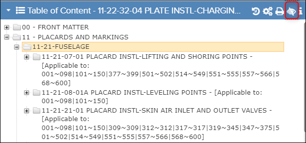
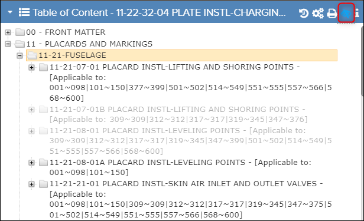

When viewing a publication for which the effectivity filter is applied the user can
choose to show or hide the non-effective content using this feature.
When the
Show/Hide Filtered Content toggle is inactive the non-effective
content is hidden from the
Table of Content pane.

Hidden Filtered Content
The
Show/Hide Filtered Content toggle is highlighted in
blue when active and the non-effective content is visible as greyed-out text.

Show Filtered Content as Grey Text
Note: The initial state of the Show/Hide Filtered Content
toggle is configurable. Refer Flatirons Pinpoint Configuration Guide, “Configure
Show/Hide Filtered Content” section.
Note: This feature is only available after
selecting one or more products for content filtering.